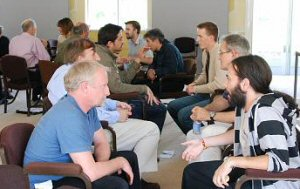

Speed Dating
At TAIC PART a session was held to spark new collaboration between attendees in the style of "speed dating". The room was arranged with two circles of chairs, with an inner circle for academics, and an outer circle for industrialists and PhD students, so that two sets of people were facing one another.
The industrialist/PhD student was given a few minutes to explain a testing problem in their work. The academic was then given a few minutes to explain his or her area or research. Finally, the industrialist/PhD student and academic discussed how they might collaborate to solve the problem. If a collaboration looked promising, the participants agreed to exchange business cards, in order to take discussions further at a later date.
Academics then moved seats around the room in order for discussions to begin between different attendees.